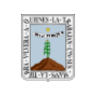

Es una aplicación multiplataforma que integra a fundaciones e instituciones públicas a favor de las personas con síndrome de Down; además de incluir información actual del síndrome de Down en México. La aplicación está dirigida para las familias de las personas con síndrome de Down. Cidown tiene el objetivo de ser un directorio de fácil uso, sencilla organización y rápida difusión entre los usuarios. También Cidown cuenta con su aplicación ANDROID nativa disponible en Google Play
-
Distrito Federal
-
Álvaro Obregón
3 Institución
send -
Azcapotzalco
1 Institución
send -
Benito Juárez
5 Institución
send -
Coyoacán
3 Institución
send -
 Cuajimalpa
Cuajimalpa
1 Institución
send -
Cuauhtémoc
4 Institución
send -
Gustavo A. Madero
2 Institución
send -
Iztacalco
1 Institución
send -
Iztapalapa
4 Institución
send -
Magdalena Contreras
1 Institución
send -
Miguel Hidalgo
3 Institución
send -
Milpa Alta
1 Institución
send -
Tláhuac
1 Institución
send -
Tlalpan
6 Institución
send -
Venustiano Carranza
1 Institución
send -
Xochimilco
1 Institución
send
-
Álvaro Obregón
-
Aguascalientes
1 Institución
send -
Baja California
1 Institución
send -
Baja California Sur
1 Institución
send -
Campeche
1 Institución
send -
Chiapas
2 Instituciones
send -
Chihuahua
2 Instituciones
send -
Coahuila
1 Institución
send -
Colima
1 Institución
send -
Durango
1 Institución
send -
Estado de México
2 Instituciones
send -
Guanajuato
5 Instituciones
send -
Guerrero
1 Institución
send -
Hidalgo
1 Institución
send -
Jalisco
3 Instituciones
send -
Michoacan
1 Institución
send -

Morelos
3 Instituciones
send -
Nayarit
1 Institución
send -
Nuevo León
6 Instituciones
send -
Oaxaca
3 Instituciones
send -
Puebla
2 Instituciones
send -
Querétaro
1 Institución
send -
Quintana Roo
2 Instituciones
send -
San Luis Potosí
1 Institución
send -
Sinaloa
2 Instituciones
send -
Sonora
1 Institución
send -
Tabasco
2 Instituciones
send -
Tamaulipas
1 Institución
send -
Tlaxcala
1 Institución
send -
Veracruz
3 Instituciones
send -
Yucatán
1 Institución
send -
Zacatecas
2 Instituciones
send
El síndrome de Down, también conocido como Trisomía 21, es una condición en la
que una persona nace con tres copias del cromosoma 21 en lugar de dos. En
México, 1 de cada 650 bebés nacen con síndrome de Down. En el mundo hay
cerca de seis millones de personas con síndrome de Down pero
desafortunadamente en México no existen datos estadísticos sobre la situación
poblacional de las personas con síndrome de Down.
Se desconoce la razón por la cual algunos bebés tienen tres copias del
cromosoma 21 en lugar de dos. Se sabe que en 98% de los casos, el síndrome de
Down es aleatorio y no hereditario (en 2% de los casos, la condición es heredada
de un padre que porta sin saberlo un cromosoma 21 adicional). La posibilidad de
tener un bebé con síndrome de Down aumenta con la edad de la madre; sin
embargo, 80% de los recién nacidos con síndrome de Down nacen de madres
menores de 35 años de edad, dado que un mayor número de mujeres jóvenes
están teniendo hijos.
Es importante señalar que el síndrome de Down no tiene ninguna relación con la
raza, nacionalidad, situación socioeconómica o religión, ni tampoco con ninguna
otra cosa que la madre o el padre hayan hecho antes de o durante el embarazo.
Esta información puede ser útil tanto para usted como para su familia sí:
1. Está considerando hacerse los estudios para saber si su bebé tiene
síndrome de Down.
2. Se hizo un examen y los resultados indican que existe la posibilidad de que su bebé pudiera tener síndrome de Down.
3. Se hizo un examen y los resultados indican que su bebé tiene síndrome de
Down.
Usted siempre debe autorizar los estudios prenatales:
No existe ninguna norma o ley mexicana que la obligue a someterse a estudios sin su consentimiento. Usted no debe ser estudiada al menos que lo autorice. Usted debe dar dicha autorización sólo después de ser informada y entender lo que miden cada estudio y los riesgos que implican. Un asesor en genética o un médico pueden ayudarle a entender las ventajas y desventajas de realizar estos estudios y sus resultados.
Generalmente hay dos tipos de estudios (invasivos y no invasivos) que pueden
hacerse durante el embarazo para ayudar a determinar si su bebé tiene síndrome
de Down, los cuales se conocen con el nombre de “estudios de diagnóstico
prenatal”.
Pruebas no invasivas: Existen 2 tipos de estudios no invasivos: los análisis de
sangre y el ultrasonido. Estudios de sangre hechos en suero materno, tales como
el tamiz bioquímico o prueba llamada “cuádruple marcador” se realiza
habitualmente entre las semanas 15 y 20 del embarazo, con un índice de precisión
de entre el 69% y el 81%.
El ultrasonido permite obtener información importante sobre la salud del feto y las
condiciones presentes en el útero. Habitualmente se realiza entre las semanas 11
y 14 del embarazo.
Triple screening o triple test consiste en un análisis de sangre, un ultrasonido y
datos de referencia como la edad materna. Este estudio puede indicar si existe
alguna alteración en el feto. Habitualmente se realizar entre las semana 15 y 20
del embarazo.
Estudios invasivos: Hay dos estudios de diagnóstico que pueden indicar con una
certeza de casi 100% si su bebé tendrá síndrome de Down. La
amniocentesis (“amnio,” para abreviar) que generalmente se practica después de
la semana 15 de embarazo. La muestra de vellosidades coriónicas por lo general
se practica entre las semanas 10 y 12 de embarazo. Ambos exámenes implican
un riesgo limitado pero real de producir un aborto.
No hay manera de saber el futuro que le depara a un bebé. En muchos aspectos, los niños con síndrome de Down son iguales a los demás. Todos necesitan recibir atención y amor. Sin embargo, las necesidades de salud y educación de una persona con síndrome de Down pueden representar un reto mayor o ser distintas que las de una persona típica. A continuación damos algunas estadísticas acerca de las personas con síndrome de Down que pueden ser de utilidad.
* La expectativa de vida media de una persona con síndrome de Down es
de 60 años.
* Desde el nacimiento se producen retrasos en el desarrollo físico pero es
imposible predecir la amplia gama de habilidades que poseen las personas
con síndrome de Down.
* Las leyes mexicanas establece que cualquier persona sin importar su
condición tiene el derecho de recibir educación gratuita y apropiada a través
del sistema de educación pública, esto aplica también para la atención
médica a través del seguro popular o la hoja de gratuidad en el Distrito
Federal.
* La mayoría de las personas con síndrome de Down tiene un coeficiente
intelectual en el rango de leve a moderado.
* Desde que se iniciaron los movimientos de derechos humanos y civiles en
la década de los sesenta, se reconoce cada vez más a las personas con
síndrome de Down como parte importante de la sociedad.
* Las personas con síndrome de Down participan en las escuelas, equipos
deportivos, organizaciones, centros de trabajo y en diversas actividades
artísticas, culturales y deportivas.
* En el mundo un número creciente de personas con síndrome de Down
viven independientes de manera total o parcial.
* Un pequeño pero creciente número de personas con síndrome de Down
está optando por contraer matrimonio.
* Un pequeño pero creciente número de personas con síndrome de Down en
el mundo está participando en programas de educación medio superior y
superior
* Hasta 50% de los bebés con síndrome de Down nacen con una
y algunos requieren intervención quirúrgica. La gran mayoría de los
defectos cardíacos son corregibles.
* Las terapias físicas, del habla y otras recibidas durante los primeros cinco
años (llamadas “intervención temprana o estimulación temprana”) pueden
marcar una diferencia significativa en el desarrollo físico e intelectual del
niño con síndrome de Down.
* La atención médica apropiada para niños y adultos con síndrome de Down
es importante y ayuda a fortalecer las capacidades físicas e intelectuales.
* Las personas con síndrome de Down tienen un mayor riesgo de afecciones
médicas, tales como problemas respiratorios, problemas de audición, apnea
del sueño, afecciones de la tiroides y enfermedad de Alzheimer. Sin
embargo, muchas personas con síndrome de Down no padecen de las
condiciones anteriores, y dado que existe tratamiento para muchas de ellas,
la mayoría puede llevar una vida plena.
* Las personas con síndrome de Down rara vez desarrollan tumores
cancerígenos sólidos, no suelen sufrir ataques cardíacos o lesiones
cerebro-vasculares.
Muchos padres sienten preocupación por el efecto en la familia y los hermanos de
un niño con síndrome de Down.
Es natural sentirse triste o preocupado si un examen detecta que el bebé tiene o
puede tener síndrome de Down. Un bebé con síndrome de Down no es algo que
las personas suelen planear y podrían surgir problemas médicos, educativos o
financieros.
Cada familia es singular y se enfrenta de manera diferente la idea o llegada de un
bebé con síndrome de Down. A pesar de los posibles retos, tanto los estudios
científicos como los testimonios personales demuestran que la mayoría de las
familias que tienen un hijo con síndrome de Down son estables, exitosas y felices,
y frecuentemente los hermanos indican haber desarrollado un mayor grado de
empatía.
Cada mujer y cada embarazo es distinto. Los familiares, amigos, profesionales de
la salud y otras personas pueden ayudar a la mujer embarazada para que reciba
un diagnóstico prenatal del síndrome de Down. A continuación proporciona el
siguiente recurso.
Medicina a Distancia
Es un centro de atención telefónica de la Secretaria de Salud de la Ciudad de
México, proporciona servicios de asesoría médica, psicológica, nutricional entre
otros servicios, las 24 horas los 365 días del año. También podrá consultar todos
los servicios que dispone la Secretaria de Salud; desde cómo y dónde
hacer los trámites para integrarse al Seguro Popular u obtener la Hoja de
Gratuidad, hasta encontrar las clínicas u hospitales que cuentan con el equipo
necesario para realizar el diagnóstico prenatal u otros servicios.
Teléfono: 5132-0909
Sitio web
CIDOWN incluye diversas fundaciones e instituciones públicas en
donde puede preguntar por los servicios disponibles para las personas con
síndrome de Down en educación, capacitación laboral o trabajo, asistencia social, denuncias entre otros servicios.
Recursos extra:
Trámite de la tarjeta de cortesía para personas con discapacidad
Sitio Web
Alta de vehículos para personas con discapacidad
Sitio Web